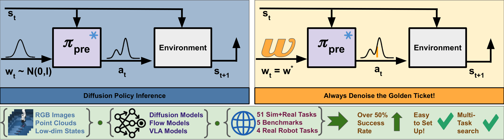

What happens when a pretrained generative robot policy is provided a constant initial noise as input, rather than repeatedly sampling it from a Gaussian? We demonstrate that the performance of a pretrained, frozen diffusion or flow matching policy can be improved with respect to a downstream reward by swapping the sampling of initial noise from the prior distribution (typically isotropic Gaussian) with a well-chosen, constant initial noise input---a golden ticket. We propose a search method to find golden tickets using Monte-Carlo policy evaluation that keeps the pretrained policy frozen, does not train any new networks, and is applicable to all diffusion/flow matching policies (and therefore many VLAs). Our approach to policy improvement makes no assumptions beyond being able to inject initial noise into the policy and calculate (sparse) task rewards of episode rollouts, making it deployable with no additional infrastructure or models. Our method improves the performance of policies in 38 out of 43 tasks across simulated and real-world robot manipulation benchmarks, with relative improvements in success rate by up to 58% for some simulated tasks, and 60% within 50 search episodes for real-world tasks. We also show unique benefits of golden tickets for multi-task settings: the diversity of behaviors from different tickets naturally defines a Pareto frontier for balancing different objectives (e.g., speed, success rates); in VLAs, we find that a golden ticket optimized for one task can also boost performance in other related tasks. We release a codebase with pretrained policies and golden tickets for simulation benchmarks using VLAs, diffusion policies, and flow matching policies.
The lottery ticket hypothesis for robot control proposes that the performance of a pretrained, frozen diffusion or flow matching policy can be improved by replacing the sampling of initial noise from a prior distribution with a well-chosen, constant initial noise input, called a golden ticket.

Given a pretrained policy and a reward function and an environment for a new downstream task, we pose finding golden tickets as a search problem, where candidate initial noise vectors, which we call lottery tickets, are optimized to find the ticket that maximizes cumulative discounted expected rewards on the downstream task.
Our proposed method has several unique benefits:
@article{patil2026goldenticket,
title={You've Got a Golden Ticket: Improving Generative Robot Policies With A Single Noise Vector},
author={Patil, Omkar and Biza, Ondrej and Weng, Thomas and Schmeckpeper, Karl and Thomason, Wil and Zhang, Xiaohan and Walters, Robin and Gopalan, Nakul and Castro, Sebastian and Rosen, Eric},
journal={},
year={2026}
}